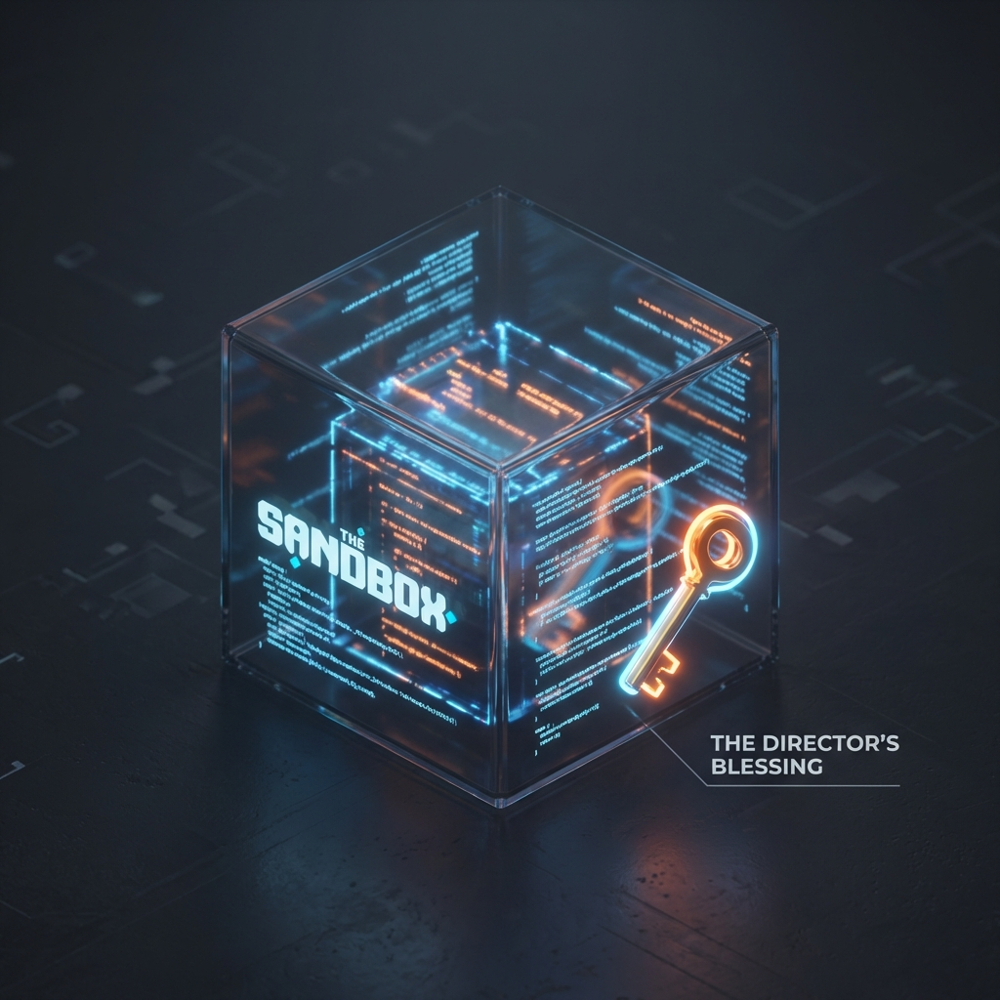
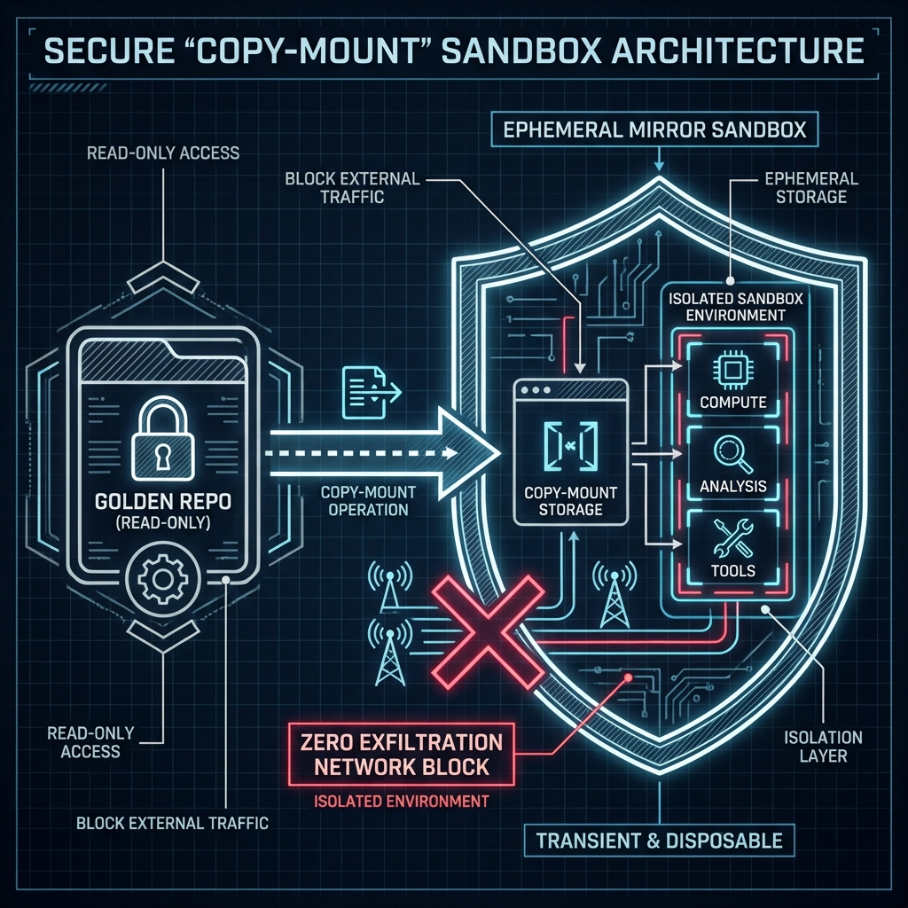
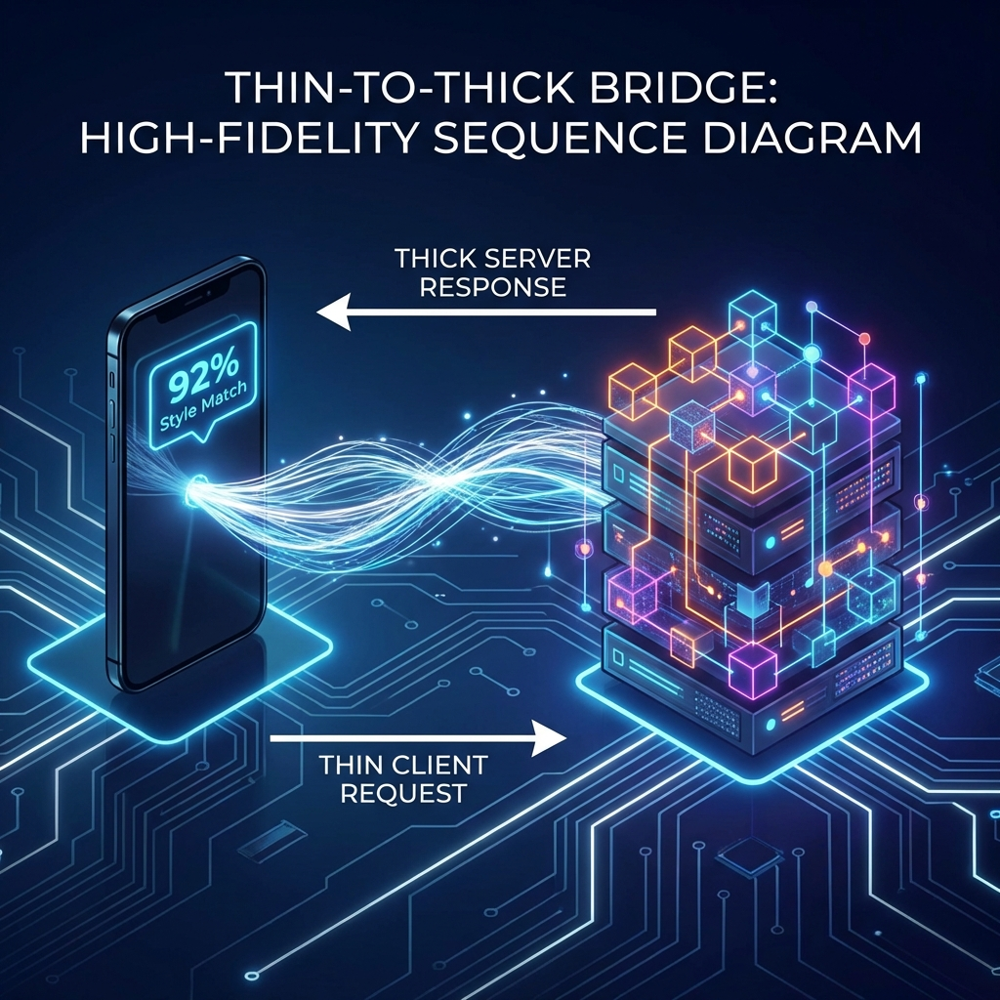

B2B CLOSED CLAW
Engineering Agency.
Without the Security Debt.
Stop choosing between velocity and safety. ClosedClaw provides the world’s first Sovereign Engineering Infrastructure. Give your AI agents full shell access in an isolated vessel—and you hold the only key to the merge.

Most agents punch holes in your security.
We build a vault around your code.
The Legacy Risk
VF
The ClosedClaw Standard
⚠ Bind-mounts that expose your host
✓ Ephemeral Copy-Mounts
⚠ Unencrypted .env files
✓ Zero-Network Sandboxes
⚠ "Open" shell access
✓ Outcome-Based Governance
Code on the Metro.
Approve at the Cafe.
Dispatch a mission. The Architect clones your repo into a disposable sandbox, iterates, and runs tests in silence. You receive a Strategic Briefing on your phone only when the work is proven. One tap to merge.
- Disposability by Design
- Asynchronous Velocity
- Mobile Command Center

THE SEAL
The Hardened Handshake
Physical Isolation
Docker-based copy-mounts protect your .git and host system. Nothing touches metal.
Governance Trace
Every bash and edit command is logged in a tamper-proof flight recorder.
Decision Intelligence
Approvals include Style Match scores, Notebook provenance, and Test Proofs.
